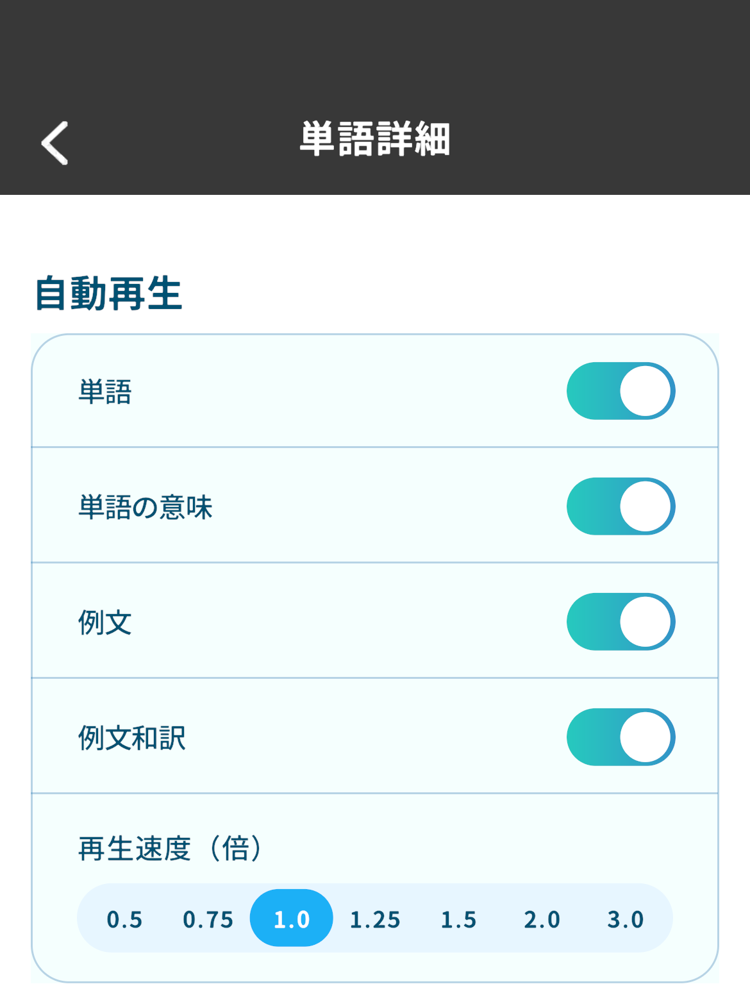
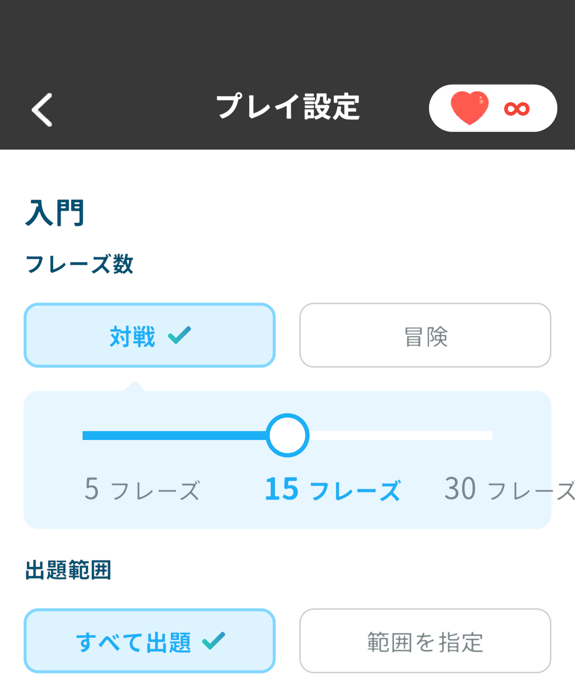

自動再生を改善し、
フレーズ帳から対戦を
プレイできるようになりました
2026/9/10 12:00
モチタン・モチスピを開発している神谷です。
v11.5.0 へのアップデートにより、モチタン・モチスピの自動再生が改善され、モチスピのフレーズ帳から対戦をプレイできるようになります。
モチタン・モチスピ：自動再生を改善
単語詳細/フレーズ詳細の自動再生において、以下の改善を行いました。
- 再生速度を0.5倍から3.0倍まで変更できるようになりました。
- バックグラウンド再生に対応し、画面を閉じても移動中などにそのまま音声を聞くことができます。

設定手順： 単語詳細 > 歯車アイコン > 再生速度（倍）
モチスピ：フレーズ帳から対戦をプレイ
モチスピのフレーズ帳から、対戦をプレイできるようになりました。
- 無料プランでは、フレーズ帳からの対戦、冒険が1日3回までプレイできます（単語帳での制限とは別枠です）。
- モチタンのフレーズ帳詳細にある「モチスピでプレイ」から、モチスピに移動してプレイできます。

操作手順： フレーズ帳 > フレーズ帳詳細 > 対戦/冒険をプレイ > プレイ設定 > 対戦
※「対戦」を選択した後に「スタート」を押します。
移動中や画面を閉じているときも学習を続けられる心地よさ、そして覚えた表現をすぐに対戦で使える楽しさにこだわって作りました。
開発者 神谷創